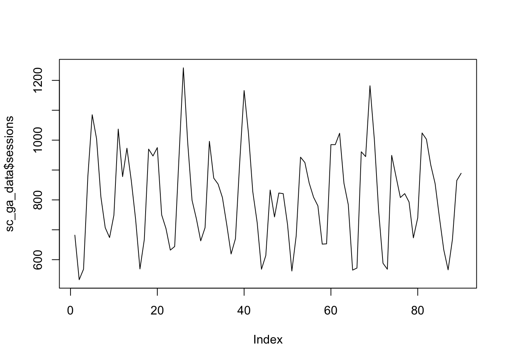
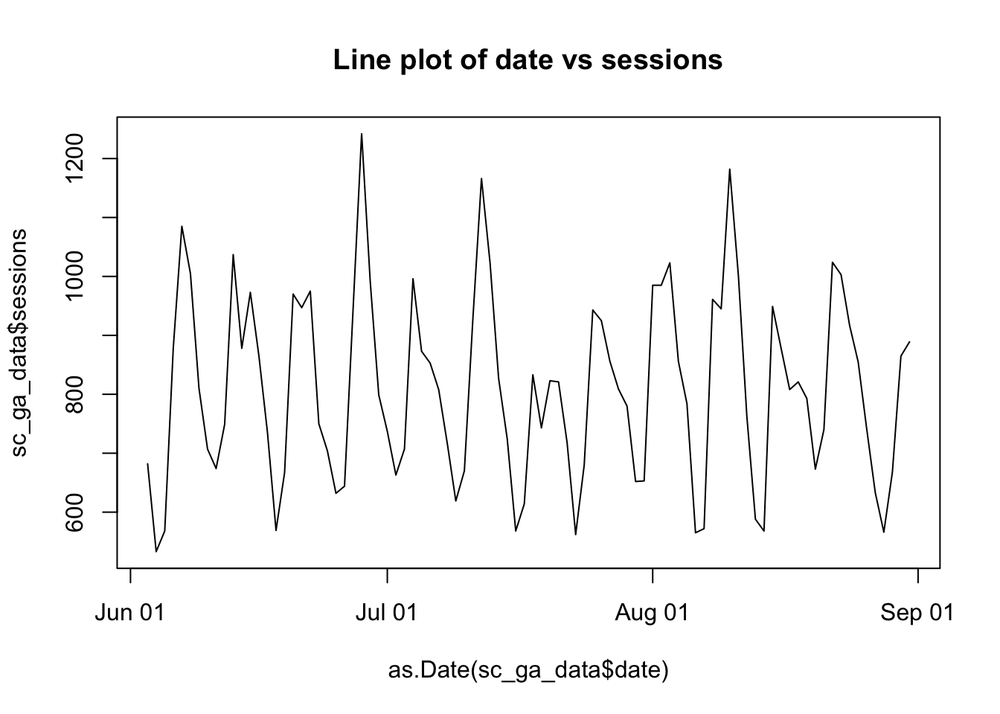
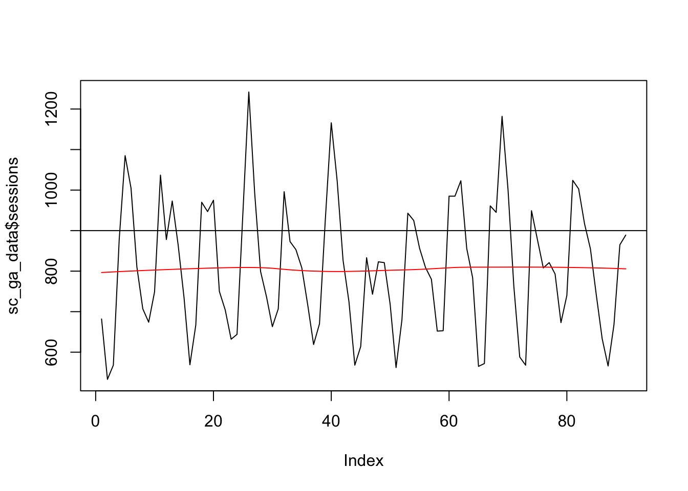
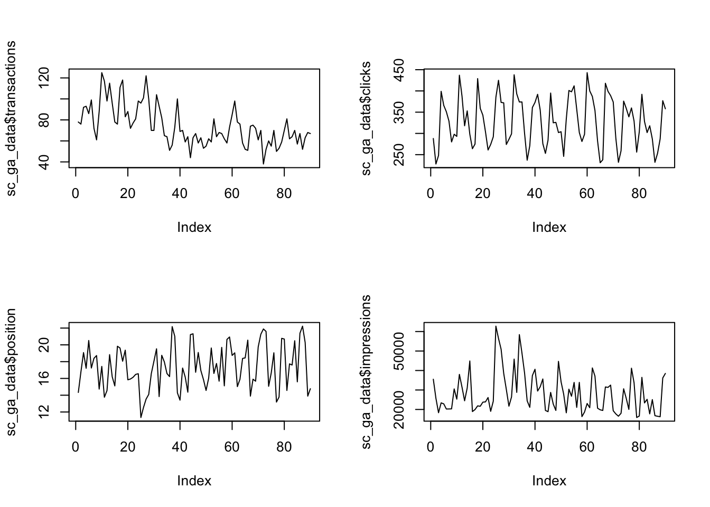
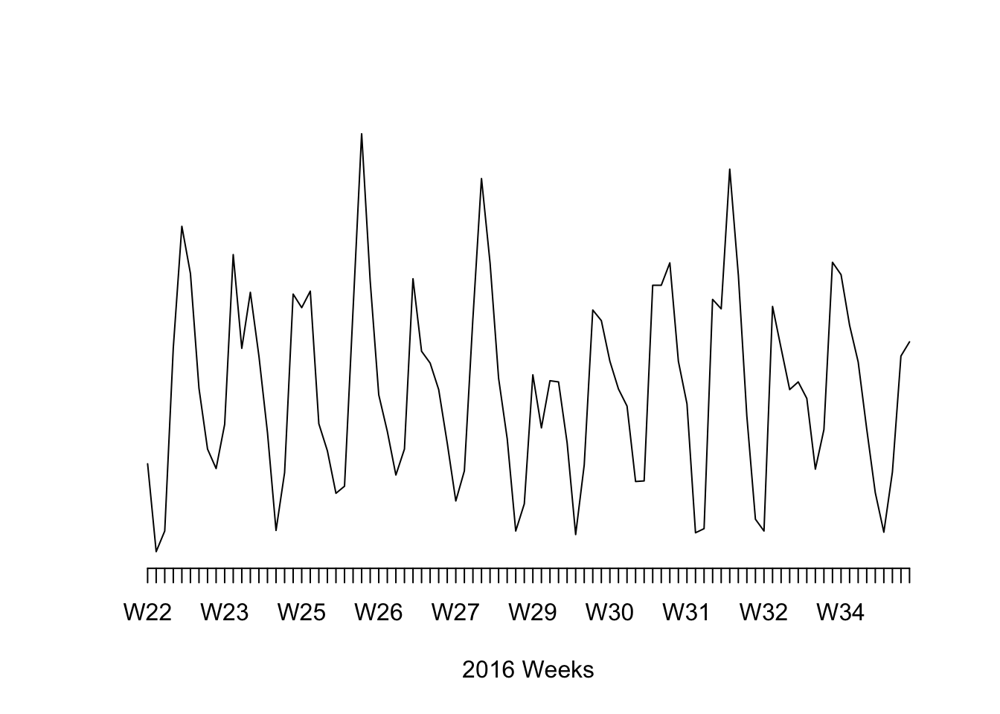
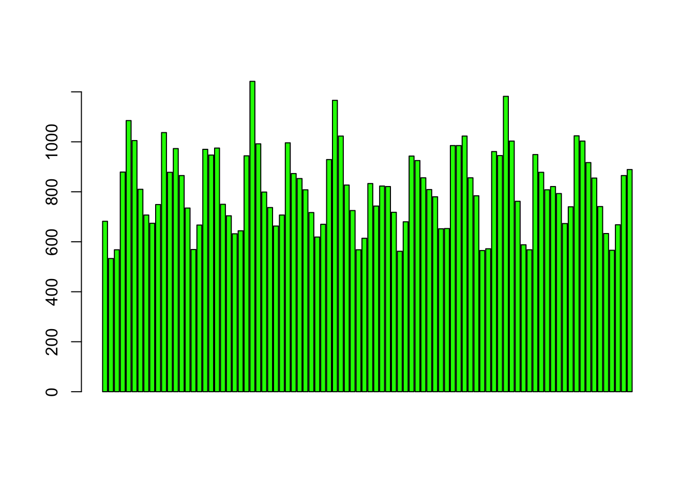
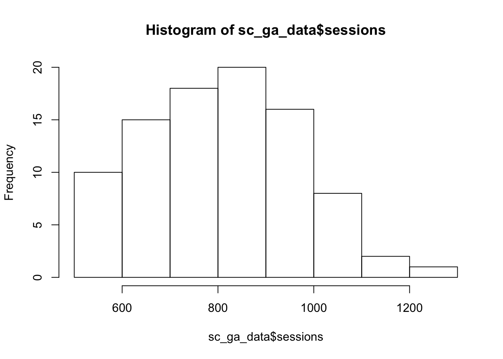

Base plots
Whilst you will likely get sexier plots using other libraries, sometimes you just need to quickly peek or see the shape of your data without going through all the other syntax. This chapter hopefully should give you some tools to quickly make exploratory plots in base R.
There are lots of guides out there for base R plots, as a start try Quick-R’s Basic Graphs and R Base plots - an idiots guide.
For this chapter, we’ll use the Search Console + GA data.
Loading datasets
sc_ga_data <- read.csv("./data/search_console_plus_ga.csv", stringsAsFactors = FALSE)## get the web data
web_data <- read.csv("./data/gadata_example_2.csv", stringsAsFactors = FALSE)We will also pivot the data like before:
## use tidyverse to pivot the data
library(dplyr)
library(tidyr)
## get only desktop rows, and the date, channelGrouping and sessions columns
pivoted <- web_data %>%
filter(deviceCategory == "desktop") %>%
select(date, channelGrouping, sessions) %>%
spread(channelGrouping, sessions)
## get rid of any NA's and replace with 0
pivoted[is.na(pivoted)] <- 0The function plot()
plot() is actually a gateway to many different types of plots, using R’s class system. In most cases R will try to judge what you want to see when you pass an object to plot and react accordingly, although in some cases you may want to start adding customisations.
For instance, passing a single vector produces a scatterplot, with the x-axis being the position in the vector:
## a simple scatterplot
plot(sc_ga_data$sessions)
## make it a line graph
plot(sc_ga_data$sessions, type = "l")
## plot against date - will error if you pass in a vector of class character, needs Date class
plot(as.Date(sc_ga_data$date), sc_ga_data$sessions, type = "l", main = "Line plot of date vs sessions")
Once you have a plot, there are some functions such as abline(), lines(), and points() that when you run on the next line will appear over the previous plot:
plot(sc_ga_data$sessions, type = "l")
## add a red trend line with loess()
lines(lowess(sc_ga_data$sessions), col = "red")
## A horizontal line at 900
abline(h = 900)
If you pass in a factor, then it will attempt to show a plot suitable for categorical variables, in this case a boxplot.
web_data$deviceCategory <- as.factor(web_data$deviceCategory)
plot(web_data[,c("deviceCategory","sessions")], main = "Box-plot of pageviews", outline = FALSE)
The function par() and other animals
par() can be used to set a lot of low-level graphical options:
## facet plots in a grid
par(mfrow = c(2,2))
plot(sc_ga_data$transactions, type = "l")
plot(sc_ga_data$clicks, type = "l")
plot(sc_ga_data$position, type = "l")
plot(sc_ga_data$impressions, type = "l")
## remember to reset it again
par(mfrow = c(1,1))axis() lets you redefine the axis, but you need to remove them first from the plot otherwise it will write over the existing ones.
## axes = FALSE gets rid of the axes, ann gets rid of the labels.
plot(as.Date(sc_ga_data$date), sc_ga_data$sessions, type = "l", axes = FALSE, ann = FALSE)
axis(1, as.Date(sc_ga_data$date), labels = format(as.Date(sc_ga_data$date), format = "W%W"))
title(xlab = "2016 Weeks")
Bar and histograms
barplot(sc_ga_data$sessions, col = "green")
hist(sc_ga_data$sessions)
Bar plots will plot your data, whilst histograms will plot the frequency distribution